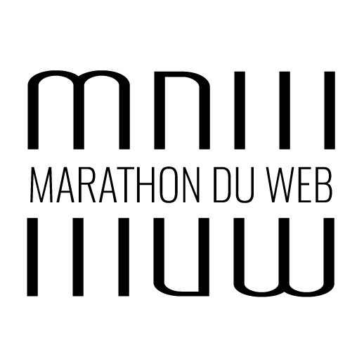
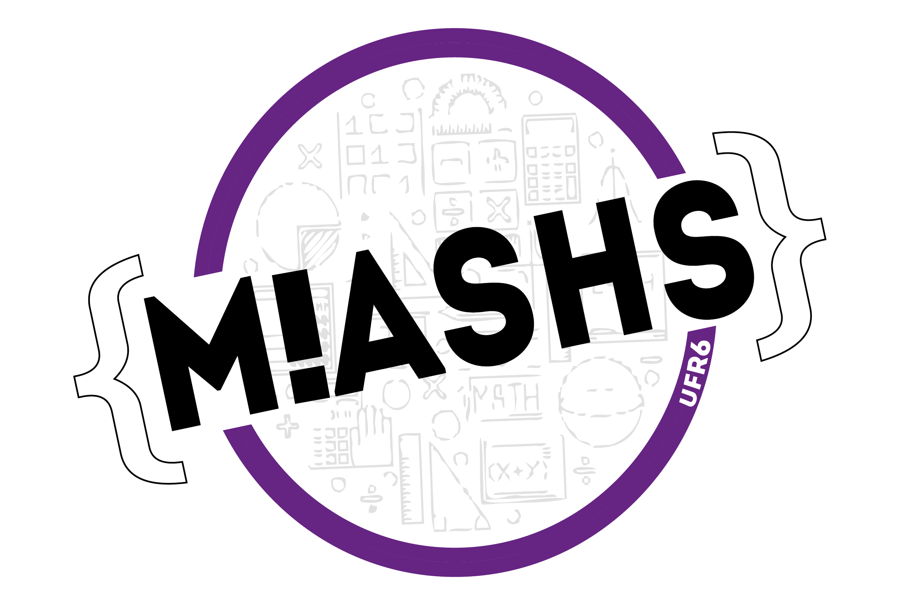

Data Scientist
Septembre 2017 - Now
Dans le cadre de mon Master en Maths-Informatiques-Statistiques, j'ai pu effectuer mon alternance de deuxième année en tant que Data Scientist chez Twin Solutions, une start-up montpellieraine. Twin Solutions propose des solutions d'analyse prédictive à divers clients, j'ai donc pu travailler sur différentes problèmatiques :
Analyse prédictive sur le taux d'attrition(churn) d'une grande société de télécommunication
Prévision de vente (Forecast Sales)
Identifications de comportements et de types de clients (clustering)
Apprentissage, Machine Learning, Modélisation, Visualitsation
Technologies utilisées : R, Shiny, Shiny Dashboard, Python
Compétences développées : Analyse prédictive, analyse descriptive, création de POC, qualité rédactionelle, travail d'équipe
Challenge LifeCLEF 2018 Expert
Février 2018
Participation au Challenge LifeCLEF 2018, identification automatique de plantes (espèces) et d’animaux à partir d’un échantillon de 1 440 000 images.
Apprentissage, Machine Learning, Modélisation, Visualitsation
Technologies utilisées :Python, Keras, TenserFlow
Compétences développées : Apprentissage, Machine Learning, Modélisation, Visualitsation, travail d'équipe
Analyse de données météo
2017
Projet réalisé lors du Master 2. Nous nous sommes interessé à différentes variables climatiques mensuelles pour les stations de
métropole et d’outre-mer appartenant au Réseau Climatologique Régional de Base (RBCN) de l’Organisation
Météorologique Mondiale (OMM) àfin de modéliser et de prédire la quantité et la force du vent.
Technologies utilisées : R, R Markdown, Git
Compétences développées : Analyse descriptive, analyse prédictive, ACP, Data Préparation, sélection de variables, visualisation graphique
Code source sur Git
Rapport de projet

Data Analyst
Septembre 2016 - Aout 2017
Lors de ma première année d'alternance, j'ai pu être affecté au poste de Data Analyst pour Orange à Paris. J'étais chargé d'analyse de données, ayant pour but d'aider à la prise de décisions stratégiques internes au groupe.
Technologies utilisées : Excel, Qgis, Powerpoint, JavaScript, Html, Css
Compétences développées : Analyse descriptive, expert Excel (TCD, VBA...), gestion de projet, Product Owner

Prix du "Marathon Durable"
Avril 2017
Une semaine pour réaliser et promouvoir un évnènement ! Challenge organisé par l'Université Paul Valéry en collaboration avec le Master Infocom.
J'ai contribué à la création du site Web, en back et en front
- Technologies utilisées : Php, Html, Css, MySQL
- Compétences développées : Travail d'équipe, rendre un projet dans un temps imparti court, organisation, synergie de compétences
Site du Marathon du Web
Analyse multi-niveaux de phrases
2016 - 2017
Lors du projet annuel de Master 1, j'ai pu travail en partenariat avec des docteurs en linguistique.
Le but du projet était de pouvoir identifier de nouvelles méthodes de recherche de motifs(patterns) dans des phrases. Le corpus utilisé était tous les discours oraux prononcés à l'assemblée européenne de 1998 à 2015
Technologies utilisées : Python, D3.JS, HTML, CSS
Compétences développées :Projet de recherche, visualtionsation graphique, Data Minning, analyse de texte, étude bibliographique, gestion de projet AGILE

Site Web Open Data - Salaires des politiques
2016
Projet réalisé au cours du Master 1. L'objectif était de réaliser un site Web sans bases de données en faisant appel uniquement à des API.
Le sujet choisi a été de s'interesser aux salaires et aux présences des élus politiques en Ile de France au Conseil Régional.
Technologies utilisées : HTML, CSS, JavaScript, Api Open Data IDF
Compétences développées :Travail de groupe, maitrise des API, développement Web
Voir le site

Projet Big Data / Data Minning
Septembre 2015 - Juin 2016
Lors de ma licence Informatique mention "Cursus Master Ingénieurie" (CMI), j'ai été ammené à effectuer un projet annuel dans l'équide ADVANSE du LIRMM.
Le but du projet a été d'analyser des milliers de commentaires sur le site Trip Advisor àfin de pouvoir en extraire la polarité(positif, négatif ou neutre) et d'en extraire des cibles précises(cuisine, accueil, literie etc ...).
Technologies utilisées : C, Python, HTML, CSS, Java, Perl
Compétences développées :Projet de recherche, Data Minning,analyse de texte, détection de sentiment,détection de cible, étude bibliographique, gestion de projet AGILE
Développeur Web
Février 2015 - Mai 2015
Lors de mon stage de fin de diplôme à l'IUT de Montpellier, j'ai occupé le poste de Développeur WEB.
J'avais pour mission de développer une application Web, en synergie avec mon équipe, favorisant les traitements sur les plateforme de e-learning interne au groupe.
Technologies utilisées : HTML, CSS, Php, Zend Framework, Web Services
Compétences développées :Première expérience professionnelle, découverte du monde du travail, travail en équipe et en autonomie, développement Web